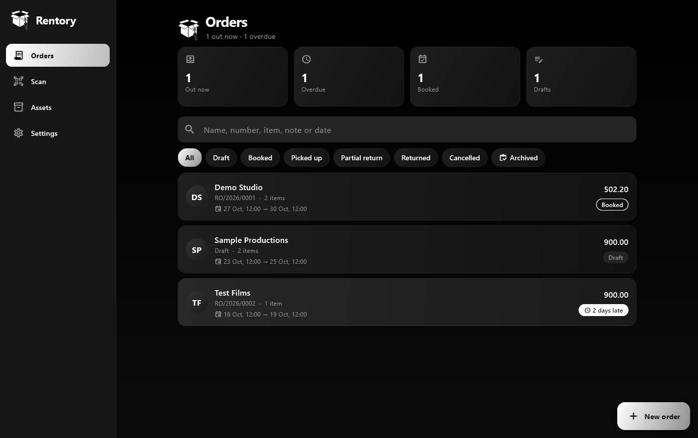

Business systems developer
I automate the manual work in your business.
Custom Odoo modules and business apps for phone and desktop. I run a company's Odoo system every day, across HR, finance, sales and operations, so I build what your team actually needs.
Available for clients in the Gulf and worldwide, in Arabic and English.

50+ employees and 80+ orders a month, all running on the system I built for Sokoon.
Problems I've already solved
Each of these was a real problem at the company I work for. Each one is now handled by the system I built.
Attendance is tracked in a WhatsApp group, and someone copies the times out by hand.
→ GPS check-in in Odoo, with reminders and overtime approval
Invoices and receipts are put together in Word or Excel, one at a time.
→ Printed from the order in 2 minutes, amount in Arabic words included
Nobody knows exactly where each item is, who has it, or when it comes back.
→ Every serial shows its status, location and return date
Customer requests get lost between chats, calls and notebooks.
→ Every request becomes an order in Odoo Rentory, none lost since launch
Revenue reports for owners and investors take days to prepare.
→ Live revenue reports in Odoo, one click away
Odoo is installed, but your team works around it because it doesn't fit how you work.
→ Custom modules built around how the team already works
Where I work: Sokoon Rental House
A camera and media equipment rental house in Damascus, part of Sokoon Holding. Since September 2025 I've run their Odoo 19 Enterprise system and written their custom modules for HR, finance, sales and operations. I also have 1 year of experience in accounting, so documents and reports come out the way the finance team expects. Everything below is live and used every day.
What I built there

Rentory app
Orders, pickups, returns and late fees on any phone or computer. Works with or without Odoo.
Android, iPhone, Windows and Mac from one codebase
Attendance Shift Guard
GPS check-in, personal shifts, reminders and overtime approval.
Replaced a WhatsApp attendance group
Invoices and vouchers
Generated from the order with the amount in Arabic words. No formatting or retyping by hand.
Minutes instead of an hour per document
Odoo Rentory
Orders, equipment, contracts, deposits and late fees in one app.
Launched on 1 August 2026 No customer request lost since launch
Revenue analytics
Revenue and most-rented reports, one click away.
Investor reports without spreadsheetsSmaller work
Customer discounts
Set a customer's discount once, applied to every order.
No more forgotten or wrong discounts Source code ↗Odoo 17 → 19 upgrade
A live company database moved two versions forward.
In their words
لاحظنا تحول كبير في نظام عمل الشركة الداخلي بعد تعاملنا مع قصي
احترافية و مهنيّة تستحق الإشادة
“We noticed a big change in how the company runs internally after working with Kosai. Professional, skilled work that deserves praise.” Translated from Arabic
Where else this works
I built these for a rental company, but the parts underneath are the same in most businesses.
- Items tracked by serial, with contracts, deposits and a booking timelineEquipment and tool hire, property leasing, IT and medical equipment, vehicle fleets
- GPS check-in, personal shifts, reminders and overtime approvalConstruction sites, factories, retail branches, security and cleaning crews
- A phone app with barcode scanning, photos and signaturesDeliveries, stock counts, site inspections, maintenance visits
- Arabic documents with the amount in words, and live revenue reportsAny company that bills in Arabic and reports to owners or investors
- A discount set once per customer and applied automaticallyWholesale, distribution, service contracts between companies
What I can build for you
Start small with one painful task, or replace a whole manual process.
01Custom Odoo modules
New apps or changes to the ones you use: Sales, Purchase, Inventory, Manufacturing, Accounting, HR, Rental, Website. Python, OWL/JavaScript and QWeb reports.
02Setup, upgrades and cleanup
Version upgrades, importing data from Excel or old systems, fixing broken reports and Studio leftovers. Odoo.sh, Community or Enterprise.
03Documents and reports
Quotations, invoices, delivery notes, payslips and other printed forms in Arabic and English, in your own design, plus the reports your owners and investors ask for.
04Apps for phone and desktop
Apps your team installs on phones and desktops, connected to Odoo or standalone: bookings, field check-ins, stock counts, approvals. One app for Android, iPhone, Windows and Mac. Example: the Rentory app.
05Integrations and data
Connect Odoo to your website, spreadsheets or other tools, and clean up messy product and customer data.
06Support and changes
A monthly plan for fixes, small features and help for your team after go-live.
Why work with me
Code you can read first
Most of my modules are open-source on GitHub, so you can see how I write before you hire me.
I use what I build
My modules run a real company with 50 employees every day. If something is annoying, I feel it first.
Arabic done properly
Right to left layouts, amounts in Arabic words, bilingual invoices and reports that look right when printed.
Close to your timezone
Damascus is UTC+3, the same as Riyadh and an hour behind Dubai. I answer in Arabic or English.
How it works
Free call
15 minutes. You tell me what takes too long or keeps going wrong.
Fixed quote
A written scope, a fixed price and a delivery date. No surprises.
Build and test
I build on a copy of your system and show you progress as I go.
Go live
I install it, train your team, and fix any bugs free for 30 days.
Pricing
Every project gets a fixed price after the call. These are starting points so you know what to expect.
Custom module
What's included
One process automated end to end, like purchase approvals, job costing or GPS attendance.
Full custom app
What's included
A complete system like Odoo Rentory, or an app for phone and desktop.
Monthly support
What's included
Fixes and small changes as your team needs them, with a reply within one working day. A short report each month of what was done. New features are quoted separately.
Small fix
What's included
One clear problem fixed: a broken report, an error message, or a field or rule your team needs. Price agreed before I start, delivered within 3 days, tested on a copy of your system first. If it turns out bigger, I tell you before doing anything more.
Small fixes are paid on delivery. Bigger projects are paid in stages: part up front, the rest on delivery. You own all the code.
Questions
Which Odoo versions do you work with?
Mainly Odoo 17, 18 and 19, Community or Enterprise, on Odoo.sh or your own server. I've upgraded a live company from 17 to 19.
We don't use Odoo. Can you still help?
Yes. I can build a standalone app for phone and desktop, or help you decide whether Odoo is a good fit before you spend money on it.
Do you only work with rental companies?
No. Rental is where I work day to day, but most of what I built there is the same in a contracting firm, a distributor or a factory: attendance, printed documents, asset tracking, approvals and reports.
Who owns the code?
You do. You get the full source code, installed on your system or your GitHub.
When are you available?
Send me the problem during your workday. I work on it that evening, and you see progress the next morning. I'm available for calls from 6 PM to midnight Damascus time (7 PM to 1 AM in Dubai, the same as Riyadh).
How do we pay?
By card (Visa / Mastercard), PayPal, bank transfer, Wise, Revolut, Payoneer or Paysera, and other methods on request. You get an invoice in my name with a secure payment link, pay through it like any online payment, and I confirm once it reaches me. Payments go through a payment partner, so your receipt may show their name instead of mine. Small fixes are paid on delivery, bigger projects in stages.
Do you speak Arabic?
Arabic is my native language and I work in English every day. Documents, apps and training can be in either or both.
Tell me what's slowing you down.
Book a 15 minute call, or send a message on WhatsApp or email. I reply within a day.
kosai@blasedoesit.com